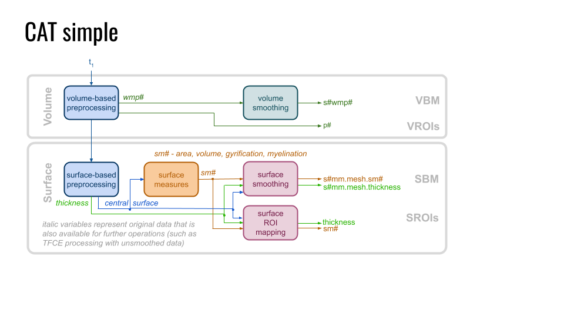

CAT simple
CAT simple is a batch that contains a fully standardized cross-sectional/longitudinal CAT preprocessing that prepare your data for voxel- (VBM), surface- (SBM) and region-based morphometry analysis (RBM). It classifies the GM and WM brain tissue (segmentation) and maps them to the template space (spacial registration), where it is smoothed with 4, 8, and 12 mm (see MRI subdirectory). Next the central cortical surface is reconstructed and cortical measures were estimated (such as thickness, area, volume, and gyrification), registered to the template surface (spherical registration) and smoothed 6, 12, and 24 mm (see surf subdirectory). For region-of-interest (ROI) analysis the volumetric Neuromorphometrics and surface-based Desikan atlas are applied (see label subdirectory).
Keep in mind to use only one level of smoothing that fits to the expected effect (recommend) or otherwise to correct for multiple comparison. If non of these filter rates fit, you can apply the volumetric SPM smoothing on the RAW images '^wmp.*' in the mri directory or the CAT surface smoothing for the RAW surface data '^lh.thickness', '^lh.curvature', etc. in the surf directory.

Data flow of the CAT simple batch that combines multiple standardized preprocessing batches of CAT.